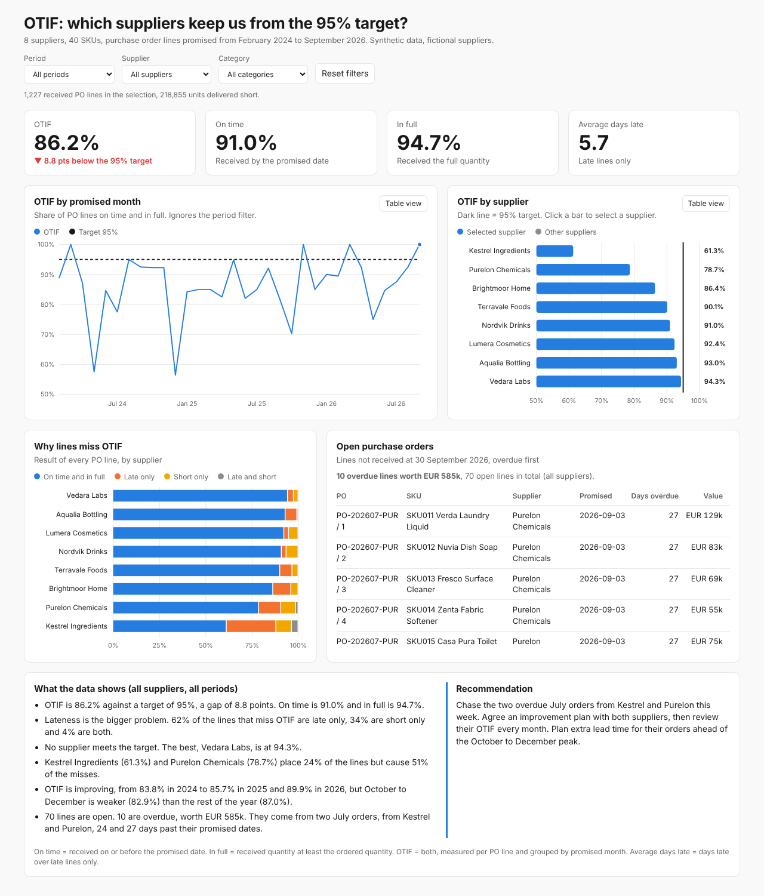

OTIF and supplier delivery performance
Which suppliers deliver on time and in full, and which ones keep us from the 95% target? A purchase order case study with synthetic data.
- Tools
- Python (pandas), Excel, interactive dashboard built with Claude
- Data
- 1,319 purchase order lines, 8 suppliers, 40 SKUs, 2024 to 2026. Synthetic, fictional suppliers.
Problem statement
A fictional FMCG company buys its products from eight suppliers. The target is that 95% of purchase order lines arrive on time and in full (OTIF). When a delivery is late or short, the demand planner has to fix the gap, so supplier reliability feeds directly into planning.
The questions to answer:
- What is our OTIF today, and is it improving?
- Which suppliers are holding us back from the target?
- Are deliveries mostly late or mostly short?
- Which purchase orders are overdue right now?
Our approach
-
Load the data
Read
purchase_orders.csv(1,319 lines in 264 purchase orders, placed from January 2024 to September 2026) and the product masterproducts.csv. Each line holds the supplier, the SKU, the order date, the promised date, the received date, the ordered quantity and the received quantity. -
Clean and check
The file contains the kind of errors a real purchase order export has, so it needed cleaning:
Problem found Lines What we did Duplicate lines 10 Removed Received before it was ordered 5 Left out of the KPIs, listed in an exceptions file Received but no quantity 7 Left out of the KPIs, listed in an exceptions file Not received yet 70 Kept for the open order view No supplier or SKU was missing. That leaves 1,227 received lines for the KPIs. The errors were added on purpose when the synthetic file was created, to show the cleaning step.
-
Create the KPIs
For every received line, in Python:
KPI How it is calculated On time Received on or before the promised date In full Received quantity at least the ordered quantity OTIF On time and in full Days late Received date minus promised date, for late lines -
Build the supplier scorecard
Grouped the lines by supplier, by promised month and by category, compared each supplier with the 95% target, and split every missed line into late only, short only or both. Also listed the open purchase orders and how many days overdue they are at 30 September 2026.
-
Validate in Excel
Rebuilt the KPIs in an Excel workbook with live formulas on the same lines (6,587 formulas, no errors). The Excel results match the Python results for every supplier and month.
-
Build the dashboard
One page with four KPI tiles, OTIF by month against the target, OTIF by supplier, the reasons lines miss OTIF and the open purchase orders. Period, supplier and category filters recalculate every number.
Result
- OTIF, all suppliers
- 86.2%
- Target
- 95%
- OTIF, Kestrel Ingredients
- 61.3%
- Overdue open orders
- EUR 585k
Open the interactive dashboard, with period, supplier and category filters, or download it as a PDF.

What the data shows
- OTIF is 86.2% against a target of 95%, a gap of 8.8 points. On time is 91.0% and in full is 94.7%.
- Lateness is the bigger problem. 62% of the lines that miss OTIF are late only, 34% are short only and 4% are both.
- No supplier meets the target. The best, Vedara Labs, is at 94.3%.
- Kestrel Ingredients and Purelon Chemicals place 24% of the lines but cause 51% of the misses.
- OTIF is improving, from 83.8% in 2024 to 85.7% in 2025 and 89.9% in 2026, but October to December is weaker (82.9%) than the rest of the year (87.0%).
- 70 lines are open. 10 are overdue, worth EUR 585k, from two July orders that are 24 and 27 days past their promised dates.
| Supplier | Lines | On time | In full | OTIF | Days late |
|---|---|---|---|---|---|
| Kestrel Ingredients | 142 | 69.7% | 88.0% | 61.3% | 7.9 |
| Purelon Chemicals | 150 | 86.7% | 90.7% | 78.7% | 5.8 |
| Brightmoor Home | 154 | 90.3% | 96.1% | 86.4% | 2.3 |
| Terravale Foods | 152 | 93.4% | 96.7% | 90.1% | 3.5 |
| Nordvik Drinks | 155 | 97.4% | 93.5% | 91.0% | 9.0 |
| Lumera Cosmetics | 157 | 97.5% | 94.9% | 92.4% | 5.0 |
| Aqualia Bottling | 158 | 93.7% | 99.4% | 93.0% | 4.5 |
| Vedara Labs | 159 | 96.9% | 97.5% | 94.3% | 2.0 |
Recommendation
Chase the two overdue July orders from Kestrel and Purelon this week. Agree an improvement plan with both suppliers and review their OTIF every month. Plan extra lead time for their orders ahead of the October to December peak.
Limitations
OTIF is measured per purchase order line and grouped by promised month, so a different rule, such as measuring per order or allowing a grace period of a day or two, would give different numbers. Each month has only about 40 lines, so single months move a lot.